Dirichletおよび接触境界条件に対するNitsche法¶
GetFEM++ はDirichletタイプまたは摩擦境界条件との接触を、Lagrange乗数を使用せずに弱形式で考慮に入れることができるNitche法の汎用的な実装を与えます。この方法は、Dirichlet境界条件をNeumann境界条件と同様に弱定式項に変換するため、非常に魅力的です。しかしながら、この利点は、対応するNeumann項の近似を必要とするため、Nitsche法の実施がモデル依存であることがコストです。Nitsche法で境界条件をモデルの変数に追加するには、対応するブリック要素が、この変数に適用されるすべての偏微分項のNeumann項の近似にアクセスする必要があります。以下では、変数  を考慮して、
を考慮して、
この変数上のすべてのNeumann項の和。Neumann項  は変数 に依存することが多いことに注意してください。しかしモデルの他の変数にも依存します。これは、例えば、非圧縮弾性の混合式の場合です。Neumann項は、モデルのいくつかのパラメータ（弾力係数...）にも頻繁に依存しますが、これはその式に含まれると仮定されます。
は変数 に依存することが多いことに注意してください。しかしモデルの他の変数にも依存します。これは、例えば、非圧縮弾性の混合式の場合です。Neumann項は、モデルのいくつかのパラメータ（弾力係数...）にも頻繁に依存しますが、これはその式に含まれると仮定されます。
例えば、Laplace項（ 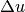 ）が変数 に適用される場合、Neumann項は のようになります。ここで、  は考慮されている境界上の外側の単位法線です。もし が変形可能な物体の変位を表すなら、 Neumann項は 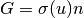 のようになります。もちろん、その場合 はいくつかの物性値に依存します。さらに、圧力を表す変数 を混合した非圧縮ブリック要素に加えると、 上のNeumann項は次のように に依存します。 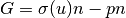
は考慮されている境界上の外側の単位法線です。もし が変形可能な物体の変位を表すなら、 Neumann項は 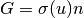 のようになります。もちろん、その場合 はいくつかの物性値に依存します。さらに、圧力を表す変数 を混合した非圧縮ブリック要素に加えると、 上のNeumann項は次のように に依存します。 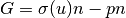
Nitsche法を課しているブリック要素が、関連する変数に適用されるすべての偏微分項に対して機能する汎用的な実装を可能にするために、モデルに部分微分項を追加する各ブリック要素は、構築文字列（弱形式言語）が必要です。
これらの式は、modelオブジェクトの特別なメソッド:
expr = md.Neumann_term(variable, region)
すべての部分微分項要素が与える式を走査し、適切な操作を実行することによって、すべてのNeumann項の和に対する式を自動的に導出することを可能にします。もちろん、このメソッドを呼び出す前に、すべてのボリューム要素をモデルに追加する必要があります。Neumann項の導出は、2次偏微分方程式に対してのみ働く。高次pdeの汎用的な実装はより複雑になります。
Dirichlet条件のための汎用的なNitsche法¶
変数 が考慮され、条件を規定したいとします。
部分  は考慮する領域の境界です。ここで、
は考慮する領域の境界です。ここで、  は、スカラーの場合、1と等しいと見なされるか、ベクトルの場合の恒等行列か、固有値として1または0のみを持つ特異行列のいずれかです。これにより、ここでは、 の接線または接線成分のみを処理することができます。たとえば、正規成分のみを処理したい場合、 は以下のように選択されます 。ここで、 は 上の外向きの単位法線です。
は、スカラーの場合、1と等しいと見なされるか、ベクトルの場合の恒等行列か、固有値として1または0のみを持つ特異行列のいずれかです。これにより、ここでは、 の接線または接線成分のみを処理することができます。たとえば、正規成分のみを処理したい場合、 は以下のように選択されます 。ここで、 は 上の外向きの単位法線です。
このDirichlet条件を処理するためのNitsche法では、問題の弱形式に次の項を加えます。
 と
と  はNitsche法の2つのパラメータです。
はNitsche法の2つのパラメータです。  は に対応する試行関数です。パラメータ は正または負が選択できます。
は に対応する試行関数です。パラメータ は正または負が選択できます。  は標準的な状況で対称的な接線項につながるより標準的な方法に対応します。
は標準的な状況で対称的な接線項につながるより標準的な方法に対応します。  は数が減少するという利点を持つ非対称的な方法に対応します。非線形の場合には の2次導関数を必要とせず、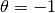 は少なくとも標準的な状況では非平衡保磁力を保証する一種のSkew対称法である（これは、 ）。パラメータ は一種のペナルティ・パラメタですが（手法は一貫していますが）、次のようになります 、ここで、 はメッシュで 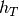 は要素 の直径です。 を除く標準的な状況では、パラメータ はNitsche法の収束を確実にするために十分小さくする必要があることに注意してください。
は数が減少するという利点を持つ非対称的な方法に対応します。非線形の場合には の2次導関数を必要とせず、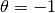 は少なくとも標準的な状況では非平衡保磁力を保証する一種のSkew対称法である（これは、 ）。パラメータ は一種のペナルティ・パラメタですが（手法は一貫していますが）、次のようになります 、ここで、 はメッシュで 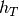 は要素 の直径です。 を除く標準的な状況では、パラメータ はNitsche法の収束を確実にするために十分小さくする必要があることに注意してください。
Nitsche法でDirichlet条件をモデルに追加した要素は次のとおりです:
getfem::add_Dirichlet_condition_with_Nitsche_method
(model &md, const mesh_im &mim, const std::string &varname,
const std::string &Neumannterm,
const std::string &gamma0name, size_type region,
scalar_type theta = scalar_type(1),
const std::string &dataname = std::string());
この関数は変数 varname とメッシュ領域 region にDirichlet条件を追加します。この領域は境界でなければなりません。 Neumannterm は弱形式言語の表現として記述されたNeumann項（Green式によって得られる）の表現です。この項は、すべてのボリューム要素がモデルに追加されると md.Neumann_term(varname, region) で取得できます。Dirichlet条件はNitsche法で規定されています。 dataname はDirichlet条件のオプションの右辺です。これは一定か、または有限要素法上に記述することができます;Dirichlet条件が規定されている変数に応じて、スカラー値またはベクトル値を返します。 gamma0name はNitsche法のパラメータです。 theta は正または負のスカラー値です。 theta = 1 は標準的な対称的なメソッドに対応しています。これは、 gamma0 が小さい場合に強制的に行われます。 theta = -1 は非強制的強制的なSkew対称方法に対応します。 theta = 0 はNeumann項の2次導関数が非線形問題であっても必要でない最も単純な方法です。モデル内の要素のインデックスを返します。
getfem::add_normal_Dirichlet_condition_with_Nitsche_method
(model &md, const mesh_im &mim, const std::string &varname,
const std::string &Neumannterm,
const std::string &gamma0name, size_type region,
scalar_type theta = scalar_type(1),
const std::string &dataname = std::string());
この関数は、ベクトル（またはテンソル）値変数 varname とメッシュ領域 region の正規成分にDirichlet条件を追加します。この領域は境界でなければなりません。 Neumannterm は弱形式言語の表現として記述されたNeumann項（Green式によって得られる）の表現です。この項は、すべてのボリューム要素がモデルに追加されると 、md.Neumann_term(varname, region) で取得できます。Dirichletの状態はNitsche法で規定されています。 dataname はオプションのDirichlet条件の右辺です。これは一定であるか、またはfem上に記述することができます。 gamma0name はNitsche法のパラメータです。 theta は正または負のスカラー値です。 theta = 1 は標準的な対称メソッドに対応しています。これは、 gamma0 が小さい場合に強制的に行われます。 theta = -1 は非強制的強制的なSkew対称法に対応します。 theta = 0 はNeumann項の2次導関数が非線形問題であっても必要でない最も単純な方法です。モデル内の要素のインデックスを返します。（このブリック要素は完全にテストされていません）。
getfem::add_generalized_Dirichlet_condition_with_Nitsche_method
(model &md, const mesh_im &mim, const std::string &varname,
const std::string &Neumannterm,
const std::string &gamma0name, size_type region, scalar_type theta,
const std::string &dataname, const std::string &Hname);
この関数は変数 varname とメッシュ領域 region にDirichlet条件を追加します。このバージョンはベクトルフィールド用です。それは条件 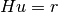 を規定します、ここで は行列のフィールドです。領域は境界でなければなりません。この領域は境界でなければなりません。 Neumannterm は弱形式言語の式として記述されたNeumann項（Green式によって得られる）の表現です。この項は、すべてのボリューム要素がモデルに追加されると、 md.Neumann_term(varname, region) で取得できます。Dirichlet条件はNitsche法で規定されています。注意：行列Hはすべての固有値が1または0に等しくなければなりません。 dataname はDirichlet条件のオプションの右辺です。それは一定であるか、または有限要素法上に記述することができます。 gamma0name はNitscheのメソッドパラメータです。 theta は正または負のスカラー値です。 theta = 1 は標準的な対称的なメソッドに対応しています。これは、 gamma0 が小さい場合に強制的に行われます。 theta = -1 は非強制的強制的なskew対称方法に対応します。 theta = 0 はNeumann項の2次導関数が非線形問題であっても必要でない最も単純な方法です。 Hname はマトリックスフィールド H に対応するデータです。それは一定の行列でなければならないか、またはスカラーのfemで記述されなければならない。モデル内の要素のインデックスを返します。 （この要素は完全にテストされていません）
摩擦条件との接触のための汎用的なNitsche法¶
We describe here the use of Nitsche’s method to prescribe a contact with Coulomb friction condition in the small deformations framework. This corresponds to a weak integral contact condition which as some similarity with the ones which use Lagrange multipliers describe in the corresponding section, see 弱積分接触条件
表記法を簡略化するためには、 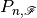 を使用してください。次のマップはいくつかの予測に対応しています：
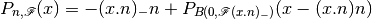
このアプリケーションは、 と中心のボールの接線部分 と半径 に の通常部分の投影を作成します。ここで、 は摩擦係数です。
これを使って、すべり速度を のように近似することを考えてみましょう。ここで、 と 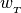 は使用されている時間積分スキーム（ 弱積分接触条件 参照）に依存して、Nitscheの摩擦接触の項は以下のようになります。
![&-\int_{\Gamma_C} \theta \gamma G\cdot D_u G[v] d\Gamma \\
&+\int_{\Gamma_C} \gamma P_{n,\mathscr{F}}(G - \Frac{Au}{\gamma} + \Frac{gap}{\gamma}n + \Frac{\alpha w_{_T}}{\gamma})\cdot(\theta D_u G[v] - \Frac{v}{\gamma}) d\Gamma.](../_images/math/39c0b1594c4d689bf6d897c6bb7dd7065880033a.png)
ここで、 は接触境界です。 はNeumann項でここでは接触境界での応力  を表します。そして
を表します。そして  は 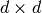 マトリックスです。
は 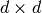 マトリックスです。
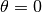 の値では、大部分の項は消えることに注意してください。
以下の関数は、変数 varname_u とメッシュ境界 region にCoulomb摩擦の有無にかかわらず接触条件を追加します。 Neumannterm は弱形式言語の表現として記述されたNeumann項（Green式によって得られる）の表現です。この項は、すべてのボリューム要素がモデルに追加されると md.Neumann_term(varname, region) で取得できます。接触条件はNitsche法で規定されています。剛性の障害物はデータ dataname_obstacle が障害物までの符号付き距離である（有限要素法で補間された）データで記述しなければなりません。 gamma0name はNitscheのメソッドパラメータです。 theta は正または負のスカラー値です。 theta = 1 は標準的な対称的なメソッドに対応しています。これは、 gamma0 が小さい場合に強制的に行われます。 theta = -1 は非強制的強制的なSkew対称方法に対応します。 theta = 0 はNeumann項の2次導関数が必要でない最も単純な方法です。オプションのパラメータ dataexpr_friction_coeff は弱形式言語の任意の表現である摩擦係数です。モデル内の要素のインデックスを返します。
getfem::add_Nitsche_contact_with_rigid_obstacle_brick
(model &md, const mesh_im &mim, const std::string &varname_u,
const std::string &Neumannterm,
const std::string &expr_obs, const std::string &dataname_gamma0,
scalar_type theta_,
std::string dataexpr_friction_coeff,
const std::string &dataname_alpha,
const std::string &dataname_wt,
size_type region);

目次
前のトピックへ
次のトピックへ
Download
Main documentations
- GetFEM++ User documentation
- Python Interface
- Matlab Interface
- Scilab Interface
- Gmm++
- GetFEM++ project